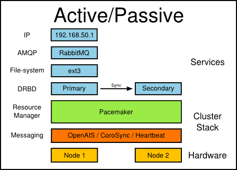
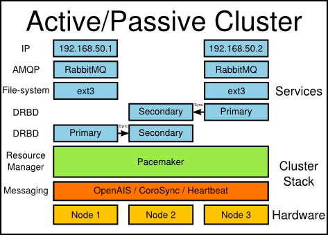
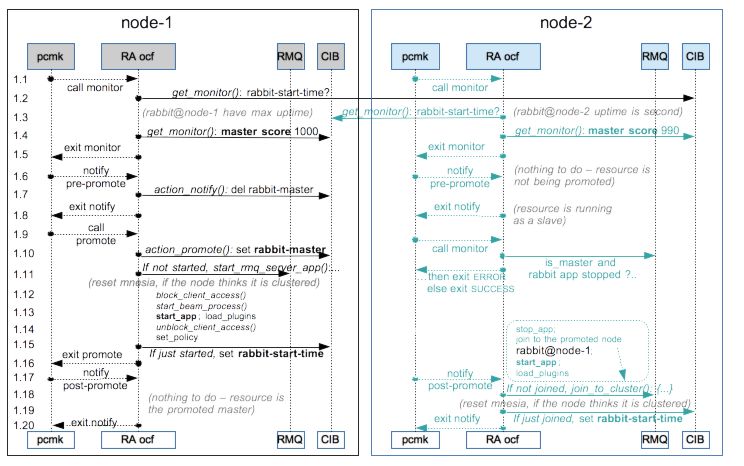
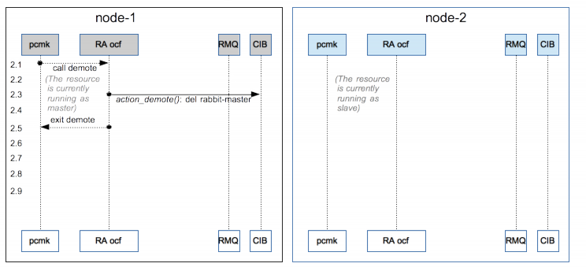
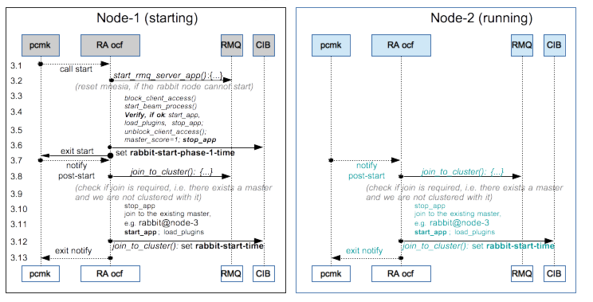
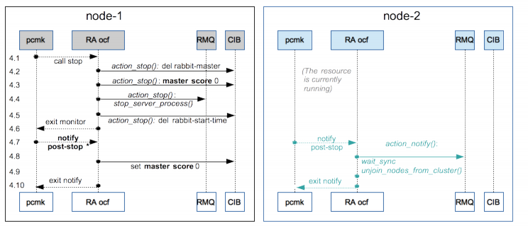
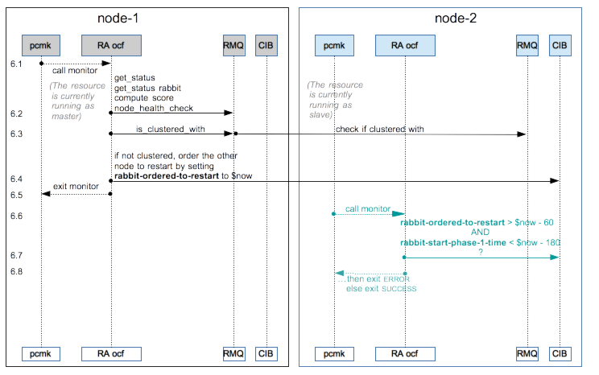

High availability with Pacemaker and DRBD
This part documents a technique for achieving active-passive high availability with RabbitMQ. Mirrored queues can be easier to use and do not impose a delay at failover.
There are many forms of high availability, replication and resilience in the face of various different types of failure. RabbitMQ can be made to work in an active/passive setup, such that persistent messages that have been written to disk on the active node are able to be recovered by the passive node should the active node fail. Non-persistent messages will be lost, and the promotion of the passive node may take a little while as it reads the messages off disk.
Whilst RabbitMQ also supports clustering, clustering is intended to facilitate scalability, not availability. Thus in a cluster, if a node fails, queues which were on the failed node are lost. With the high availability setup described in this guide, when a node fails, the durable queues and the persistent messages within them can be recovered by a different node.
Clustering can be combined with high availability to create a cluster that can scale beyond a single node and simultaneously preserve persistent messages and durable resources in the event of node failure.
Requirements
This guide assumes that you're going to use the Pacemaker HA stack to do the resource management and monitoring. This guide will also make use of DRBD to provide a shared storage area in which the active node will write messages. If you have a NAS or SAN or some other means of providing reliable shared storage to both nodes, then you can use that instead of DRBD. If you are going to use DRBD, note that the DRBD OCF script which we use later on only appeared in DRBD version 8.3.2.
This guide uses CoroSync (which is a cut-down version of OpenAIS) in preference to Heartbeat as the messaging layer underneath Pacemaker. However, we also have Heartbeat installed so as to be able to access Heartbeat's OCF scripts. You should find that the instructions here work equally well regardless of whether you use CoroSync, Heartbeat or OpenAIS.
Note that CoroSync relies on multicast in order to do resource discovery. In some environments (e.g. EC2), multicast is not available. Heartbeat, which can do resource discovery using unicast, is the recommended solution if multicast is not available.
This guide does not tell you how to install Pacemaker, Heartbeat, OpenAIS, CoroSync or DRBD - there are already several good guides available for these tasks:
- Pacemaker install guide
- General Pacemaker documentation: In particular, see the Clusters from scratch guides
- DRBD users guide
As of August 2010, Debian testing and Ubuntu lucid both contain sufficiently up-to-date versions of Heartbeat, CoroSync and Pacemaker that it should not be necessary to compile from source.
If you're compiling Pacemaker et al from source, be aware that the various autoconf configure scripts don't seem to test thoroughly enough for various libraries, the result of which is that compilation may eventually fail due to missing libraries, even though the configure script passes. Under Debian Sid, we have had to install the following extra packages, though obviously your mileage will vary with different distributions: autoconf libtool pkg-config libglib2.0-dev libxml2 libxml2-dev uuid-dev uuid-runtime libnss3-dev groff libxslt1.1 libxslt1-dev libesmtp5 libesmtp-dev libssl-dev ssmping xsltproc. Be aware that we have found that if the build does fail, merely installing the necessary libraries was not enough to make the build then pass - we have had to go back and re-run the autotools and configure steps before it would find the new libraries and compile correctly.
Assumptions
By this point, we assume that you have installed Pacemaker and, if you're going to use it, DRBD, on two different machines, which can see each other. You should have configured DRBD and thus be able to set one node the primary and the other the secondary for the DRBD resource. The initial sync between the two nodes has already been done. Our DRBD resource drbd1 configuration looks like:
global {
usage-count no;
}
resource drbd1 {
device /dev/drbd1;
disk /dev/vdb;
meta-disk internal;
protocol C;
on ha-node-1 {
address 192.168.100.21:7789;
}
on ha-node-2 {
address 192.168.100.22:7789;
}
}
We assume that if you bring up the DRBD device, you have already put a file-system on it and can mount and unmount it. crm configure show should show nothing configured:
ha-node-2:~# crm configure show
node ha-node-1
node ha-node-2
property $id="cib-bootstrap-options" \
dc-version="1.0.7-6fab059e5cbe82faa65f5aac2042ecc0f2f535c7" \
cluster-infrastructure="openais" \
expected-quorum-votes="2" \
stonith-enabled="false" \
no-quorum-policy="ignore" \
last-lrm-refresh="1268667122"
rsc_defaults $id="rsc-options" \
resource-stickiness="100"
Note that here we have already set stickiness to 100, disabled STONITH, and told Pacemaker not to worry about not having quorum (see the section Create an Active/Passive cluster in the Clusters from scratch guides referenced above). In reality, you probably do want STONITH devices, and you'll want a cluster of at least 3 nodes, so that quorum can be maintained in the event of node failure, and ring-fencing can occur.
DRBD in Pacemaker
If you are planning on using DRBD to provide shared storage, you need to get Pacemaker to manage this. The instructions here are adapted for our setup but are pretty much the same as from the Clusters from scratch guides and from the DRBD Pacemaker documentation. DRBD only allows one node at a time access to the shared device, so there is never any danger of multiple nodes writing over the same data. If you're using some other means to provide shared storage, you may wish to use Pacemaker to ensure only one node has the shared storage area mounted at any one time.
ha-node-2:~# crm crm(live)# cib new drbd INFO: drbd shadow CIB created crm(drbd)# configure primitive drbd ocf:linbit:drbd params drbd_resource="drbd1" op monitor interval="60s" crm(drbd)# configure ms drbd_ms drbd meta master-max="1" master-node-max="1" clone-max="2" clone-node-max="1" notify="true" crm(drbd)# configure primitive drbd_fs ocf:heartbeat:Filesystem params device="/dev/drbd1" directory="/media/drbd1" fstype="ext3" crm(drbd)# configure colocation fs_on_drbd inf: drbd_fs drbd_ms:Master crm(drbd)# configure order fs_after_drbd inf: drbd_ms:promote drbd_fs:start crm(drbd)# cib commit drbd crm(drbd)# cib use live crm(live)# cib delete drbd crm(live)# exit bye ha-node-2:~#
The first configure command here creates a resource drbd. That is then incorporated into a resource called drbd_ms in the second configure. We then create a drbd_fs resource which knows how to mount the DRBD device. We can only mount the DRBD resource on the node which is the master, so we then create a colocation directive fs_on_drbd which states that the drbd_fs and drbd_ms:Master resources must be on the same node. Finally, we know that we can only mount the file-system once the node has successfully become the master node for the DRBD device. Similarly, we must un-mount the DRBD device before degrading a node to the secondary for the DRBD device. Both of these are achieved by creating the order directive which says to promote the drbd_ms resource before starting the drbd_fs resource. Note that after committing the shadow CIB into the live CIB and switching back to the live CIB, we delete the old shadow CIB - this is purely a housekeeping exercise and is not essential.
If you're not using DRBD, you will just want to configure a single primitive ocf:heartbeat:Filesystem which can mount the shared storage.
Simple HA Rabbit
The main trick to HA Rabbit is to ensure that when the passive node becomes the active node, it must have the same node-name as the failed node. It must also have read and write access to the files in the shared storage, and if it's going to also be part of a cluster then it must also have the same Erlang cookie.
Start by installing the RabbitMQ server on both nodes. The server runs as the user rabbitmq which is a member of the group rabbitmq. You must ensure that this user and group have the same UIDs and GIDs on both nodes. You can probably save yourself some time by explicitly creating the rabbitmq user and group with the same UID and GID on all nodes before installing the RabbitMQ server at all. If necessary, edit /etc/passwd and /etc/group on both nodes, and then reinstall the RabbitMQ server to ensure all necessary files are owned by the correct user and group. Also make sure the rabbitmq user has permission to write and read to the shared storage mount point (/media/drbd1 in our example above). Although not strictly necessary at this stage, next ensure that all the nodes share the same Erlang cookie. The rabbitmq home directory is normally /var/lib/rabbitmq, so:
ha-node-2:~# scp /var/lib/rabbitmq/.erlang.cookie ha-node-1:/var/lib/rabbitmq/ ha-node-1:~# chown rabbitmq: /var/lib/rabbitmq/.erlang.cookie ha-node-1:~# chmod 400 /var/lib/rabbitmq/.erlang.cookie
We also need to make sure that when the nodes boot, they don't start Rabbit. Thus edit the init script (usually at /etc/init.d/rabbitmq-server) and just insert an exit 0 after the comments at the top (the more correct solution is to use something like update-rc.d rabbitmq-server disable S 2 3 4 5, depending on your platform). Now create a resource in Pacemaker for Rabbit:
ha-node-2:~# crm crm(live)# cib new bunny INFO: bunny shadow CIB created crm(bunny)# configure primitive bunny ocf:rabbitmq:rabbitmq-server params mnesia_base="/media/drbd1" crm(bunny)# configure colocation bunny_on_fs inf: bunny drbd_fs crm(bunny)# configure order bunny_after_fs inf: drbd_fs bunny crm(bunny)# cib commit bunny crm(bunny)# cib use live crm(live)# cib delete bunny crm(live)# exit bye ha-node-2:~#
We create a resource called bunny which is our RabbitMQ instance. We configure it to place its database files (and message store) on our DRBD-backed mount point. We then need to colocate the bunny resource with the drbd_fs resource, and we also need to make sure that the file-system is mounted before we start the bunny resource (and similarly, the bunny resource is stopped before we un-mount the file-system). The status of the resources can be seen by running crm status on any active node:
ha-node-2:~# crm status
============
Last updated: Mon Apr 12 17:29:50 2010
Stack: openais
Current DC: ha-node-2 - partition with quorum
Version: 1.0.7-6fab059e5cbe82faa65f5aac2042ecc0f2f535c7
2 Nodes configured, 2 expected votes
4 Resources configured.
============
Online: [ ha-node-2 ha-node-1 ]
bunny (ocf::rabbitmq:rabbitmq-server): Started ha-node-1
Master/Slave Set: drbd_ms
Masters: [ ha-node-1 ]
Slaves: [ ha-node-2 ]
drbd_fs (ocf::heartbeat:Filesystem): Started ha-node-1
Thus we can see that the bunny and drbd_fs resources are running only on ha-node-1 and that the drbd_ms resource has its master as ha-node-1 and its mirror as ha-node-2. The output of mount should show that /media/drbd1 is mounted only on ha-node-1, and a ps ax | grep [r]abbit should show that RabbitMQ is running only on ha-node-1.
If you stop ha-node-1 (turn it off, or just stop Heartbeat or CoroSync), you should find all the services migrate to the other node. If you create some durable resources (e.g. durable queues or exchanges), you should find that these survive the transition to the other node. It's a good idea to play with stopping and starting the nodes at this point to build confidence that it really is doing the right thing. Status commands ( rabbitmqctl -n rabbit@localhost status and rabbitmqctl -n rabbit@localhost cluster_status) will allow you to see the status of RabbitMQ server from whichever node it is currently running on.
By default, the ocf:rabbitmq:rabbitmq-server script sets the node-name to rabbit@localhost on all nodes. This is the simplest solution as it should always be possible to resolve localhost, but it does mean that you can't join a cluster. We'll correct that later on.
To stop the bunny resource you just need to run crm resource bunny stop, and likewise to start it, crm resource bunny start. Note that you'll need to do this manually before upgrading Rabbit as if you're using a binary package then you'll have likely disabled the rabbitmq-server init script, which will mean the package manager will fail to safely stop RabbitMQ prior to upgrading its source. Unless the upgrade is changing the database schema or the format of the persisted data, you should be able to upgrade RabbitMQ on the passive node, then migrate RabbitMQ to the passive node ( crm resource migrate bunny) and upgrade what was the active node.
Getting an IP address to move with Rabbit
You may wish your highly-available Rabbit to always be accessible on the same IP address. There are a number of ways to achieve this, for example, you could use a TCP load balancer. Here, we demonstrate getting Pacemaker to migrate an IP address with Rabbit. Note that if you're happy to build into your clients the various IPs on which Rabbit may be available, then you may not need this step at all.
In testing, we have found that the IP migration done by Pacemaker frequently hangs if the IP address being migrated is on the same network as another IP interface on the same node. In the example here, the two nodes have IP addresses of 192.168.100.21 and 192.168.100.22 (both on a /24). We shall therefore choose that the IP on which Rabbit will always be available is 192.168.50.1 (i.e. a different network). This seems to make the migration of the IP address more reliable.
ha-node-2:~# crm crm(live)# cib new ip INFO: bunny shadow CIB created crm(ip)# configure primitive ip ocf:heartbeat:IPaddr2 params ip="192.168.50.1" cidr_netmask="24" crm(ip)# configure colocation bunny_on_ip inf: bunny ip crm(ip)# configure order bunny_after_ip inf: ip bunny crm(ip)# cib commit ip crm(ip)# cib use live crm(live)# cib delete ip crm(live)# exit bye ha-node-2:~#
This should all be looking rather familiar by now. We create the ip resource, we say that the bunny resource must run on the same node as the ip resource, and we make sure that the bunny resource is started after, and stopped before, the ip resource. By default, the RabbitMQ server will listen on all network interfaces, so we are done now, but we can explicitly tell it to listen on our chosen IP:
ha-node-2:~# crm_resource --resource bunny --set-parameter ip --parameter-value 192.168.50.1 ha-node-2:~#
The above command is the same as going into crm, calling configure edit bunny and then in the editor that will appear, adding to the params ip="192.168.50.1". The RabbitMQ server should then immediately be restarted, as Pacemaker detects that its configuration has changed. You should now find that when a node fails, all the resources get transferred over to the spare node, and Rabbit will start up on the same IP address. Thus clients can be completely oblivious as to which node is the active node, and which is the passive node. You could also indicate to Rabbit the IP address to use by editing the RabbitMQ configuration file and providing an entry for tcp_listeners. However, that would then spread the configuration across multiple systems, and would require you to both synchronise the configuration across all the HA nodes, and to restart the bunny resource.
HA within a RabbitMQ Cluster
Finally, we wish to be able to construct a cluster of Rabbits which can survive node failure and still remain a cluster. Our plan is to have a cluster of 2 RabbitMQ servers, spread across 3 nodes, one of which is the passive node for both of the others. Thus in the event of failure of a single node, either the passive node dies, or one of the active nodes die, causing a migration onto the shared passive node.
Sadly, we are limited by DRBD here: in an ideal world, we would like that for each RabbitMQ service, any of the three nodes could be the active, and any of the three nodes could be the secondary. That would require DRBD to be able to have one primary and multiple secondary nodes, and to be able to promote any of the secondaries to primaries in the event of failure and then add back in any failed node as a secondary, which it can't do in general. However, if you're using a NAS or SAN, then you likely will be able to achieve this extra flexibility.
So far, we have two nodes: ha-node-1 and ha-node-2 which are fully configured with DRBD, RabbitMQ, mobile IPs and filesystems. We now repeat all the above instructions again, but this time with a new machine ha-node-3 and the existing ha-node-2. The idea is that ha-node-1 and ha-node-3 will be the active nodes, and ha-node-2 will form the passive. Thus when adding all the additional resources, you'll need to make sure all the resource names are different, and obviously you'll need to take into account the change in host name, a different mount point, DRBD resource name, and a different mobile IP address (which I shall assume to be 192.168.50.2).
Rabbit nodes within a cluster need to be able to resolve each others' host-name. Currently we have that the node-name is set to rabbit@localhost which must be changed as the other nodes in the cluster would get the wrong idea if we asked them to resolve localhost. We can't use the IP address raw (i.e. we can't have the node-name as rabbit@192.168.50.1) without switching to long-names, which is more work, so instead our plan is to give a host-name of rabbit-ha-1 to 192.168.50.1, rabbit-ha-2 to 192.168.50.2 and then set the node-names to rabbit@rabbit-ha-1 and rabbit@rabbit-ha-2. There are a number of ways to do this - either configure this in your DNS server, or edit enough /etc/hosts files to ensure that all the HA nodes can resolve rabbit-ha-1 and rabbit-ha-2.
Having done that, you should now be able to issue (assuming the second RabbitMQ server resource is called bunny2):
ha-node-2:~# crm_resource --resource bunny --set-parameter nodename --parameter-value "rabbit@rabbit-ha-1" ha-node-2:~# crm_resource --resource bunny2 --set-parameter nodename --parameter-value "rabbit@rabbit-ha-2" ha-node-2:~#
The bunny and bunny2 resources should instantly restart, reflecting the changes in node-names. As per the clustering guide, we have already ensured that we have the same Erlang cookie on all of the HA nodes, and we issue the following commands to form the cluster:
ha-node-3:~# rabbitmqctl stop_app
ha-node-3:~# rabbitmqctl reset
ha-node-3:~# rabbitmqctl cluster rabbit@rabbit-ha-1 rabbit@rabbit-ha-2
ha-node-3:~# rabbitmqctl start_app
ha-node-3:~# rabbitmqctl cluster_status
Cluster status of node 'rabbit@rabbit-ha-2' ...
[{nodes,[{disc,['rabbit@rabbit-ha-1','rabbit@rabbit-ha-2']}]},
{running_nodes,['rabbit@rabbit-ha-1','rabbit@rabbit-ha-2']}]
...done.
ha-node-3:~#
And that's it - you should find that if you kill either of the HA nodes which are running Rabbit then the resources should transfer over to the passive node, Rabbit will start up, and will successfully reconnect back into the cluster.
Auto-configuration of a cluster with a Pacemaker
This part documents a technique for achieving active-active high availability with RabbitMQ with Mirrored queues
Another option to configure clusters "on the fly" is Pacemaker resource agents. There are several OCF RA agents exist upstream. More details in this comparison. The OCF scripts for the cluster resource agents are located at /usr/lib/ocf/resource.d/rabbitmq/. The first one /usr/lib/ocf/resource.d/rabbitmq/rabbitmq-server is a generic init-like script and provides no clustering. The second one /usr/lib/ocf/resource.d/rabbitmq/rabbitmq-server-ha (referenced as "RabbitMQ HA" in the comparison spreadsheet) provides an active-active disposable cluster configuration with a dynamic membership of nodes. Note that only disc nodes are currently supported by the OCF agent. There is also an example policy file /usr/lib/ocf/resource.d/rabbitmq/set_rabbitmq_policy.sh.example to enforce required modes to queues runtime.
A disposable cluster does not guarantee data persistence for some failure modes! It may end up wiping the mnesia database, which is all data, of all of the cluster nodes. Make sure to make persistent configs and configure export/import for definitions as well. See the definitions_dump_file and policy_file OCF RA configuration parameters.
To start using this OCF agent, first create a multi-state resource in your running Pacemaker cluster of 3 or more nodes. Note, that a Pacemaker >= 1.1.14 is recommended. With either the pcs or crm tools, the example commands may look like:
$ pcs resource create --force --master p_rabbitmq-server ocf:rabbitmq:rabbitmq-server-ha \
erlang_cookie=DPMDALGUKEOMPTHWPYKC node_port=5672 \
op monitor interval=30 timeout=60 \
op monitor interval=27 role=Master timeout=60 \
op start interval=0 timeout=360 \
op stop interval=0 timeout=120 \
op promote interval=0 timeout=120 \
op demote interval=0 timeout=120 \
op notify interval=0 timeout=180 \
meta notify=true ordered=false interleave=false master-max=1 master-node-max=1
$ crm configure primitive p_rabbitmq-server ocf:rabbitmq:rabbitmq-server-ha \
params erlang_cookie=DPMDALGUKEOMPTHWPYKC node_port=5672 \
op monitor interval=30 timeout=60 \
op monitor interval=27 role=Master timeout=60 \
op start interval=0 timeout=360 \
op stop interval=0 timeout=120 \
op promote interval=0 timeout=120 \
op demote interval=0 timeout=120 \
op notify interval=0 timeout=180 \
meta migration-threshold=10 failure-timeout=30s resource-stickiness=100
$ crm configure ms p_rabbitmq-server-master p_rabbitmq-server \
meta notify=true ordered=false interleave=false master-max=1 master-node-max=1
Note, that for a symmetric Pacemaker cluster, the resource should be started immediately after it has been created. And the resulting resource may look like:
$ pcs resource show p_rabbitmq-server-master
Master: p_rabbitmq-server-master
Meta Attrs: notify=true ordered=false interleave=false master-max=1 master-node-max=1
Resource: p_rabbitmq-server (class=ocf provider=rabbitmq type=rabbitmq-server-ha)
Attributes: erlang_cookie=DPMDALGUKEOMPTHWPYKC node_port=5672
Meta Attrs: migration-threshold=10 failure-timeout=30s resource-stickiness=100
Operations: monitor interval=30 timeout=60 (p_rabbitmq-server-monitor-interval-30)
monitor interval=27 role=Master timeout=60 (p_rabbitmq-server-monitor-interval-27)
start interval=0 timeout=360 (p_rabbitmq-server-start-interval-0)
stop interval=0 timeout=120 (p_rabbitmq-server-stop-interval-0)
promote interval=0 timeout=120 (p_rabbitmq-server-promote-interval-0)
demote interval=0 timeout=120 (p_rabbitmq-server-demote-interval-0)
notify interval=0 timeout=180 (p_rabbitmq-server-notify-interval-0)
$ crm configure show p_rabbitmq-server
primitive p_rabbitmq-server ocf:rabbitmq:rabbitmq-server-ha \
params erlang_cookie=DPMDALGUKEOMPTHWPYKC node_port=5672 \
op monitor interval=30 timeout=60 \
op monitor interval=27 role=Master timeout=60 \
op start interval=0 timeout=360 \
op stop interval=0 timeout=120 \
op promote interval=0 timeout=120 \
op demote interval=0 timeout=120 \
op notify interval=0 timeout=180 \
meta migration-threshold=10 failure-timeout=30s resource-stickiness=100
$ crm configure show p_rabbitmq-server-master
ms p_rabbitmq-server-master p_rabbitmq-server \
meta notify=true ordered=false interleave=false master-max=1 master-node-max=1
After that, your cluster has to be assembled by the OCF agent and ready for operations. When assembled, one and only one resource instance must run as a resource primary (master), and others as secondaries. Note that these are the multi-state resource's Master/Slave and has nothing to the RabbitMQ cluster, which is active-active.
Pacemaker resource agent actions flow charts
The OCF resource agent clustering logic is based on a Pacemaker actions. These are monitor, start, stop, promote, demote and corresponding pre and post notifications being sent cluster-wide. The flow charts of events for the main actions are depicted below.
Promoting a new master resource:
Note that the policy_file, if configured, will be called on each promote action. This script may be used to specify ha-mode for mirrored queues, configure expiration policy and so on. Also note that when a node is promoted, the rest of the cluster members will remain running as is, unless any issues discovered later (lazy joining).
Demoting a master resource:
Nothing is done on demote, the script only removes rabbit-master attribute to remember that the current node is no longer master.
Starting a resource:
Note that if several nodes started, few post-start notify events may be missed by a Pacemaker. In order to join these nodes missed post-start events, the running nodes are being checked as well.
Stopping the resource:
Note that the notify post-stop will not be called, if any corosync node running the pacemaker resource agent for RabbitMQ had failed. In order to handle it, an external fencing action (a manual or automatic) is required. This action should kick the failed node from the RabbitMQ cluster as well. And it should re-join the node back to both the corosync and RabbitMQ clusters once it is restored.
Handling split brain:
Before checking if other nodes are clustered with the master, the master first checks its own health. Only if its health is ok, orders to restart could be given to the other nodes. That way we always keep at least one node (master) alive.
Configuration Parameters
The configuration parameters that can be provided in Pacemaker to the ocf:rabbitmq:rabbitmq-server script are all logical translations of the RABBITMQ_* environment variables that can be used to configure Rabbit. They are:
- server
- The path to the rabbitmq-server script
- ctl
- The path to the rabbitmqctl script
- nodename
- The node name for rabbitmq-server
- ip
- The IP address for rabbitmq-server to listen on
- port
- The IP Port for rabbitmq-server to listen on
- config_file
- Location of the config file
- log_base
- Location of the directory under which logs will be created
- mnesia_base
- Location of the directory under which mnesia will store data
- server_start_args
- Additional arguments provided to the server on startup
And there are even more configuration parameters for the ocf:rabbitmq:rabbitmq-server-ha script. Note, that the parameters can be as well listed with either the pcs tool:
$ pcs resource describe ocf:rabbitmq:rabbitmq-server-ha
or by the direct execution of the resource agent:
$i OCF_ROOT=/usr/lib/ocf /usr/lib/ocf/resource.d/rabbitmq/rabbitmq-server-ha meta-data
We only briefly describe some of them here. A few, that help to configure persistence and backup/restore existing definitions, was already mentioned above: definitions_dump_file and policy_file. Another useful parameter is max_rabbitmqctl_timeouts. When set with a non-zero value (default is 3), it allows to detect the rabbitmqctl consequent timeouts and mitigate by restarting affected rabbit nodes, if the RabbitMQ control plane turned unresponsive more times than it is allowed by the parameter. Note, for a Pacemaker version 1.1.13 or lower, it does nothing. Setting the parameter to zero will allow it to work for such cases as well, although rendering it to "tolerate nothing" and restart a node each time the CP becomes unresponsive.
Getting Help and Providing Feedback
If you have questions about the contents of this guide or any other topic related to RabbitMQ, don't hesitate to ask them on the RabbitMQ mailing list.
Help Us Improve the Docs <3
If you'd like to contribute an improvement to the site, its source is available on GitHub. Simply fork the repository and submit a pull request. Thank you!
Copyright © 2007-2021 VMware, Inc. or its affiliates. All rights reserved.
Terms of Use,
Privacy and
Trademark Guidelines